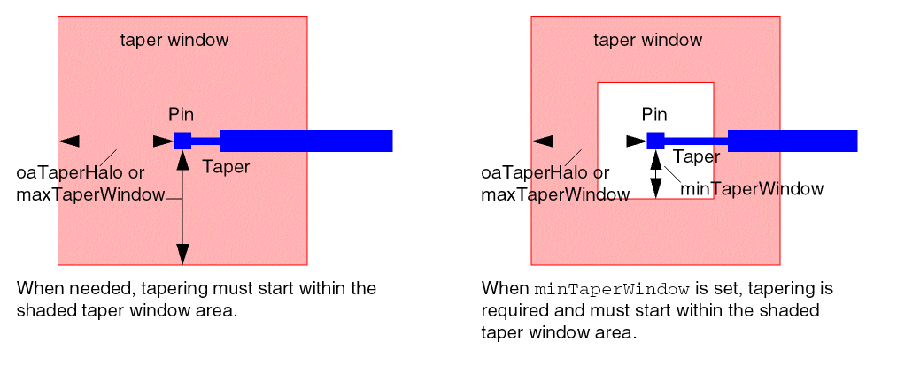

Setting Custom Tapering
To set a custom taper, you create a constraint group and assign it to a net or term. Then you set taper constraints and taper window constraints in the constraint group. If any constraint is not set in the constraint group, the value for the constraint is taken from the fallback sequence in the hierarchy.
To ensure that settings are properly saved, you must specify the appropriate constraint group type for the object type: nets or terms.
- For nets, use inputtaper and outputtaper constraint groups for input and output tapers, respectively, or use the taper constraint group when the same constraints apply to all pins.
- For instance terminals, use the taper constraint group.
For more information on how constraint group types can be assigned to terms and nets, refer to the Search Order for Taper Constraints.
If a taper constraint group is not assigned to a term, the term will inherit taper constraints from the net’s inputtaper or outputtaper constraint group, as appropriate for the pin type, and depending on whether these are assigned to the net. Otherwise, the term inherits constraints from the default taper constraint group, which is the global net default route spec (typically LEFDefaultRouteSpec).
-
Create a constraint group using create_constraint_group.
create_constraint_group -name
s_taperGroupName -
Assign the new constraint group as either
inputtaperoroutputtaper(for nets), ortaper(for instance terminals or nets) using set_constraint_group.
For example, the following command sets the input taper group for a bit net:set_constraint_group -net
The following command sets the output taper group for a bit net:s_netName-inputtapers_taperGroupNameset_constraint_group -net
The following command sets the taper group for pins in a set:s_netName-outputtapers_taperGroupNameset_constraint_group -set $setOfInstTermsAndNets -taper
s_taperGroupName -
(Optional) Using set_constraint, specify the taper window using one of the following methods:
-
To taper to the first via or bend from instance pins or top-level pins, set the
taperToFirstViaconstraint totrue. -
To specify a taper window, set these constraints:
-
maxTaperWindowor its OpenAccess equivalent,oaTaperHalo, to specify the maximum distance from the pin where tapering must start, if tapering is needed. If bothoaTaperHaloandmaxTaperWindoware given,oaTaperHalois used. -
minTaperWindowto force tapering and specify the minimum distance from the pin where tapering must occur.
-
These constraints are only recognized in a taper route spec. The default is 10 tracks from the pin, with no minimum distance required. -
To taper to the first via or bend from instance pins or top-level pins, set the
- Specify the taper constraints, as needed:
Related Topics
Setting Pin Width-based Tapering
Return to top